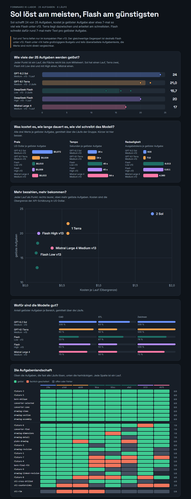
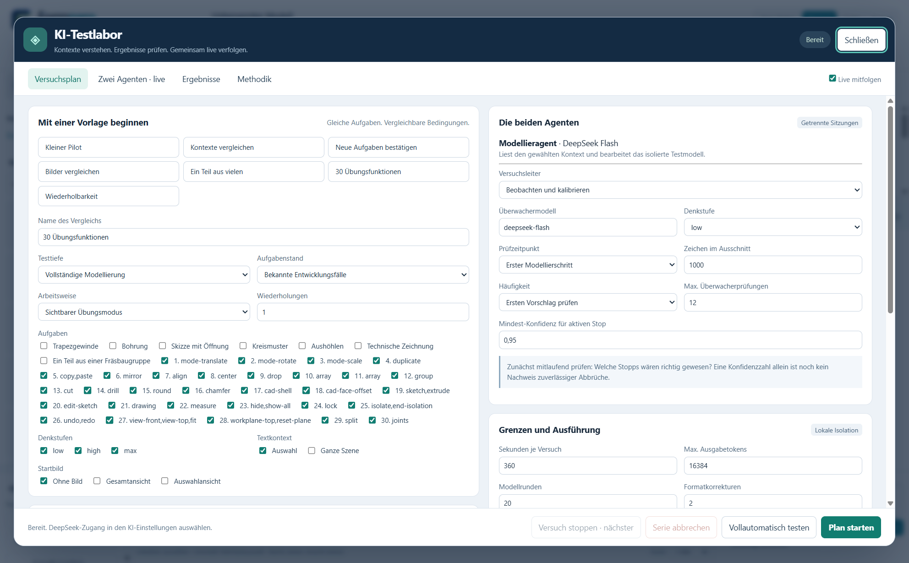
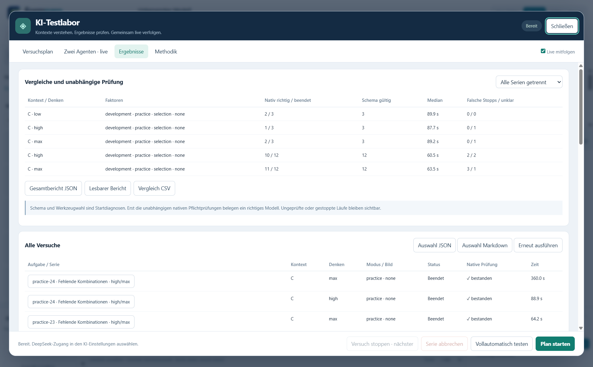

Der Modellieragent
Er erhält die Aufgabe und die festgelegten Startinformationen. In einem getrennten Testprojekt bearbeitet er den Auftrag. Im Übungsmodus sind die tatsächlich ausgeführten Bedienaktionen sichtbar.
Wie gut versteht eine KI einen CAD-Auftrag? Findet sie die passenden Werkzeuge und stimmt am Ende die Geometrie? Unser Testlabor macht diese Abläufe nachvollziehbar – vom Auftrag bis zur unabhängigen Ergebnisprüfung.

20. November 2026
25 Aufgaben aus CAD, STL und technischem Zeichnen in acht Läufen. GPT-6.2 Sol löste mit 24 von 25 Aufgaben die meisten. GPT-6.1 Terra benötigte im Mittel die wenigste Zeit je gelöster Aufgabe. DeepSeek Flash High hatte die niedrigste ausgewiesene Kostenschätzung pro gelöster Aufgabe.

Quelle sind die Ergebnis.json-Dateien aus acht Benchmark-Exporten. Zwei Aufgaben des Mistral-Laufs 45754961 wurden vor Ablauf des Zeitbudgets nicht gestartet und zählen als ungelöst. Die Läufe da032db4 (Preislimit), a6042c34 (Denkstufe nicht verfügbar) und 6d73cae2 (Zeitbudget nach 19 von 25 Aufgaben) sind in diesem Vergleich nicht enthalten.
Die Preise sind API-Kostenschätzungen in US-Dollar. Diagramme und Tabellen verwenden die im Export ausgewiesene Obergrenze für gemeldete Nutzung. Für Lauf 16ca7893 enthält der Export zusätzlich eine separate Reserve von 0,2535 USD für einen Aufruf ohne Nutzungsdaten. Ausgabetokens enthalten die ausgewiesenen Denktokens. Kosten, Laufzeit und Ausgabetokens je gelöster Aufgabe werden pro Lauf berechnet und dann pro Modell und Denkstufe gemittelt.
Pro Modell und Denkstufe liegen ein bis drei Läufe vor. Die Zahlen beschreiben diese Stichprobe. Plan v14 hatte andere Budgets und teilweise überarbeitete Aufgaben und ist nur separat auswertbar.
| Modell | Denkstufe | Läufe | Gelöst von 25 | USD je Lösung | Sekunden je Lösung | Ausgabetokens je Lösung | CAD | STL | Zeichnen |
|---|---|---|---|---|---|---|---|---|---|
| GPT-6.2 Sol | Medium | 1 | 24,0 | 0,072 | 28 | 920 | 100 % | 83 % | 100 % |
| GPT-6.1 Terra | Medium | 2 | 21,0 | 0,028 | 24 | 710 | 92 % | 50 % | 100 % |
| DeepSeek Flash | Low | 3 | 15,7 | 0,010 | 45 | 6.013 | 53 % | 67 % | 76 % |
| DeepSeek Flash | High | 1 | 20,0 | 0,009 | 45 | 5.911 | 83 % | 50 % | 100 % |
| Mistral Large 4 | Medium | 1 | 17,0 | 0,022 | 64 | 4.360 | 75 % | 50 % | 71 % |
| Lauf | Modell | Denkstufe | Gelöst | USD je Lauf | Sekunden | Ausgabetokens |
|---|---|---|---|---|---|---|
| 21fe9f9e | GPT-6.2 Sol | Medium | 24 | 1,7347 | 679,6 | 22088 |
| a7a9e5b8 | GPT-6.1 Terra | Medium | 22 | 0,5837 | 502,2 | 14719 |
| eb595234 | GPT-6.1 Terra | Medium | 20 | 0,5817 | 513,9 | 15019 |
| 16ca7893 | DeepSeek Flash | Low | 16 | 0,1487 | 675,2 | 85311 |
| 93ccb010 | DeepSeek Flash | Low | 18 | 0,1689 | 645,7 | 100085 |
| afa009ae | DeepSeek Flash | Low | 13 | 0,1618 | 744,9 | 92891 |
| 37215eb6 | DeepSeek Flash | High | 20 | 0,1834 | 893,7 | 118225 |
| 45754961 | Mistral Large 4 | Medium | 17 | 0,3666 | 1.080,0 | 74122 |
| Aufgabe | 21fe | a7a9 | eb59 | 16ca | 93cc | afa0 | 3721 | 4575 | Gelöst |
|---|---|---|---|---|---|---|---|---|---|
| fixture-3 | Gelöst | Gelöst | Gelöst | Gelöst | Gelöst | Gelöst | Gelöst | Gelöst | 8/8 |
| fixture-5 | Gelöst | Gelöst | Gelöst | Gelöst | Gelöst | Gelöst | Gelöst | Gelöst | 8/8 |
| bore-oblique | Gelöst | Gelöst | Gelöst | Gelöst | Gelöst | Gelöst | Gelöst | Gelöst | 8/8 |
| converter-selected | Gelöst | Gelöst | Gelöst | Gelöst | Gelöst | Gelöst | Gelöst | Gelöst | 8/8 |
| converter-cone | Gelöst | Gelöst | Gelöst | Gelöst | Gelöst | Gelöst | Gelöst | Gelöst | 8/8 |
| drawing-views | Gelöst | Gelöst | Gelöst | Gelöst | Gelöst | Gelöst | Gelöst | Gelöst | 8/8 |
| drawing-section | Gelöst | Gelöst | Gelöst | Gelöst | Gelöst | Gelöst | Gelöst | Gelöst | 8/8 |
| drawing-assembly | Gelöst | Gelöst | Gelöst | Gelöst | Gelöst | Gelöst | Gelöst | Gelöst | 8/8 |
| fixture-6 | Gelöst | Gelöst | Gelöst | Gelöst | Gelöst | Gelöst | Gescheitert | Gelöst | 7/8 |
| converter-find | Gelöst | Gelöst | Gelöst | Gelöst | Gelöst | Fehler | Gelöst | Gelöst | 7/8 |
| drawing-dimensions | Gelöst | Gelöst | Gelöst | Gelöst | Gescheitert | Gelöst | Gelöst | Gelöst | 7/8 |
| drawing-detail | Gelöst | Gelöst | Gelöst | Gelöst | Gelöst | Fehler | Gelöst | Gelöst | 7/8 |
| plate-drawing | Gelöst | Gelöst | Gescheitert | Gelöst | Gelöst | Gescheitert | Gelöst | Gelöst | 6/8 |
| fixture-2 | Gelöst | Gelöst | Gelöst | Fehler | Gelöst | Fehler | Gelöst | Gelöst | 6/8 |
| drawing-revision | Gelöst | Gelöst | Gelöst | Gelöst | Gelöst | Fehler | Gelöst | Offen | 6/8 |
| fixture-1 | Gelöst | Gelöst | Gelöst | Fehler | Fehler | Gelöst | Gelöst | Fehler | 5/8 |
| fixture-7 | Gelöst | Gelöst | Gelöst | Gescheitert | Gelöst | Gescheitert | Gelöst | Gescheitert | 5/8 |
| fixture-4 | Gelöst | Gelöst | Gelöst | Gescheitert | Gescheitert | Gescheitert | Gelöst | Gelöst | 5/8 |
| bore-final-fit | Gelöst | Gelöst | Gelöst | Gescheitert | Gescheitert | Offen | Gelöst | Gelöst | 5/8 |
| fixture-9 | Gelöst | Gelöst | Gelöst | Gelöst | Fehler | Fehler | Gelöst | Offen | 5/8 |
| drawing-linked-revision | Gelöst | Gelöst | Gelöst | Fehler | Gelöst | Fehler | Gelöst | Ohne Versuch | 5/8 |
| fixture-8 | Gelöst | Gelöst | Gescheitert | Gescheitert | Gescheitert | Gelöst | Gescheitert | Gelöst | 4/8 |
| stl-cross-drilled | Gelöst | Fehler | Fehler | Gelöst | Gelöst | Gelöst | Offen | Ohne Versuch | 4/8 |
| stl-countersinks | Gelöst | Gescheitert | Gescheitert | Offen | Gelöst | Offen | Gescheitert | Gescheitert | 2/8 |
| stl-rim | Fehler | Gescheitert | Gescheitert | Gescheitert | Fehler | Fehler | Offen | Offen | 0/8 |
Er erhält die Aufgabe und die festgelegten Startinformationen. In einem getrennten Testprojekt bearbeitet er den Auftrag. Im Übungsmodus sind die tatsächlich ausgeführten Bedienaktionen sichtbar.
Er beurteilt Vorschläge, ausgeführte Schritte, Werkzeugfehler und den Endzustand. Seine Rückmeldung lautet Weiter, Stop oder Unklar. Er verändert das Modell selbst nicht.
Nach dem vollständig angeforderten Prüfumfang fasst er belegte Befunde, offene Fragen und konkrete Änderungsvorschläge zusammen. Er schreibt weder Ergebnisse um noch verändert er das CAD-Modell.
Formnaro prüft die vorgegebenen Maße und Geometriebedingungen am tatsächlichen CAD-Modell. Dazu gehört auch, dass unbeteiligte Teile erhalten bleiben.
Im beobachtenden Modus werden Stopempfehlungen protokolliert. So können wir auch Fehlalarme erkennen. Der experimentelle aktive Modus kann einen Versuch abbrechen.
Wir vergleichen, welche Startinformationen und Werkzeugbeschreibungen helfen, wie sich der Denkaufwand auswirkt und welchen Unterschied Bilder oder der ausgewählte Szenenausschnitt machen.
Aufgaben, Varianten und Wiederholungen werden vorab festgelegt. Dadurch können wir Fehler untersuchen und betroffene Fälle später gezielt erneut testen.
Standardtest v13 mit 25 Aufgaben aus CAD, STL und technischem Zeichnen. Die Vorabversion 0.145.0-r1 bietet außerdem den ausführlichen Prüfplan v14, eine STL-Diagnose und einen Passungsbenchmark mit Skill-Vergleich.
Zum Beispiel: Verschieben, Drehen, Kopieren, Bohren, Skizzen, Zeichnungen, Runden, Fasen und Gelenke.

Ein konkretes Beispiel
Die Aufgabe verlangt eine Rundung an einer bestimmten Außenkante. Die KI öffnet den Kanteneditor, wählt die Kante, setzt den Radius und übernimmt die Vorschau.
Die Auswertung zeigt getrennt, ob ein Versuch beendet wurde, die native Prüfung bestanden ist und ein gültiges Überwacher-Endurteil vorliegt. Hinzu kommen Laufzeiten, gemeldeter Tokenverbrauch und Kostenschätzungen.

Verständlichere Aufgaben, passendere Werkzeugauskünfte, zuverlässigere Bedienwege und genauere Ergebnisprüfungen. Auch Fehler im Testaufbau selbst werden so erkennbar. Anschließend prüfen wir die betroffenen Fälle erneut.
Von der Diagnose zum Testlabor
Am Anfang verglichen wir die vom Anbieter ausgegebenen Denktexte mit Werkzeugaufrufen und Fehlermeldungen. Daraus entstand ein Labor, das auch ausgeführte Schritte und die tatsächliche CAD-Geometrie prüft.
Denktexte sind ausgegebene Anbietertexte und kein vollständiger Einblick in interne Modellvorgänge. Die Verbesserungen betreffen Formnaros KI-Anbindung, Bedienung und Prüfung im Entwicklungsstand; sie sind kein Training des zugrunde liegenden KI-Modells.
Übungsmodus in Solid und Fusion · Versionshinweise zu 0.142.0-r1
Die ursprünglichen 16er-Läufe und gezielten Nachtests sind im Benchmark-Archiv dokumentiert. Benchmark-Archiv auf GitHub ↗
Gezielte Testnachweise · Bisherige Kampagnenauswertung · Download und Quellen
Ergebnisse und getrennte Nachtests (JSON) · Download und Quellen
Öffne Einstellungen → KI / API → KI-Testlabor. Unter Einfach startet der Entwicklungscheck mit 15 Aufgaben auf Low, gezielten Wiederholungen auf High und optional Max. Die Zusatzprüfungen für CAD, STL-Konvertierung und Foto lassen sich einzeln starten. Unter Erweitert stellst du eigene Versuche zusammen.
Unter Ergebnisse siehst du, was sofort oder nach Prüferhinweisen gelang. Der Export enthält auch frühere Prüfungsstufen, wiederkehrende Fehler und fehlende Kontextinformationen.
In der Vorabversion 0.145.0-r1 ist ein Hänger in der automatischen Kampagne bekannt. Zwei offene Referenzfälle betreffen die Öffnungsrichtung von Senkungen beim STL-Nachbau und die Erkennung eines Endanschlags anhand seines Namens.